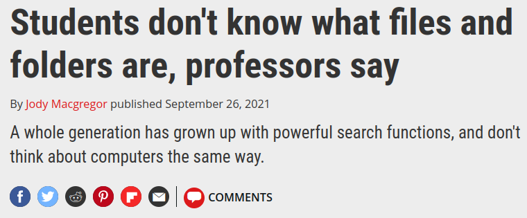

A practical introduction to R
Getting started

- Mammals, macroecology
- Biogeography, using R as a GIS
- Certified Instructor - Posit(RStudio) & The Carpentries
- user since 2011/‘blogger’ since 2015
- rOpenSci mentor 2023-2026
- package developer
- R conference speaker + organizer

R. Geert van den Berg [SPSS Tutorials]
Scripts and source code

Reproduce and modify steps in a sequence
Find mistakes
Document a workflow
Examine other people’s though process
File systems
 Monica Chin (2021)
Monica Chin (2021)
File not Found
 Jody Macgregor (2021)
PC Gamer
Folders, paths, and names

Store files in specific locations, with useful and intentional names
Short informative names
Easy to sort and compatible with partial matching
Be mindful of spaces and special characters
RStudio Projects

dedicated R process
file browser pointed at Project directory
- convenient ‘go-to-project directory’ button
working directory set to Project directory
- paths become relative to project directory
In Positron this works by setting Folders
Save source, not workspace
Save important objects or figures explicitly to file
avoid
rm(list = ls()), attached objects and packages persistSet up ‘blank slate’ and restart R session often
Jenny Bryan & Jim Hester (2020)
What they forgot to teach you about R
Jenny Bryan (2018)
Zen And The aRt Of Workflow Maintenance
Blank slate
do not save the workspace to an .Rdata file
at launch, do not reload the workspace from an .Rdata file.

This is the default behavior in Positron
File import (tabular data)
- With the “Import Dataset” button
- With a
readfunction

R for Epidemiology - Cannell & Livingstone
Spreadsheets
- ~ 1000,000,000 users worldwide
xlsx,xls,odsformats and web-based (e.g. Google sheets)

Vectors

Lists

Tables


Factors

Categorical data
The labels for each value are known as levels
Create with
factor()
Two or more vectors of the same length…

Data frame!
Tabular object with rows and columns
Columns may be of different classes
Each column/variable has a name